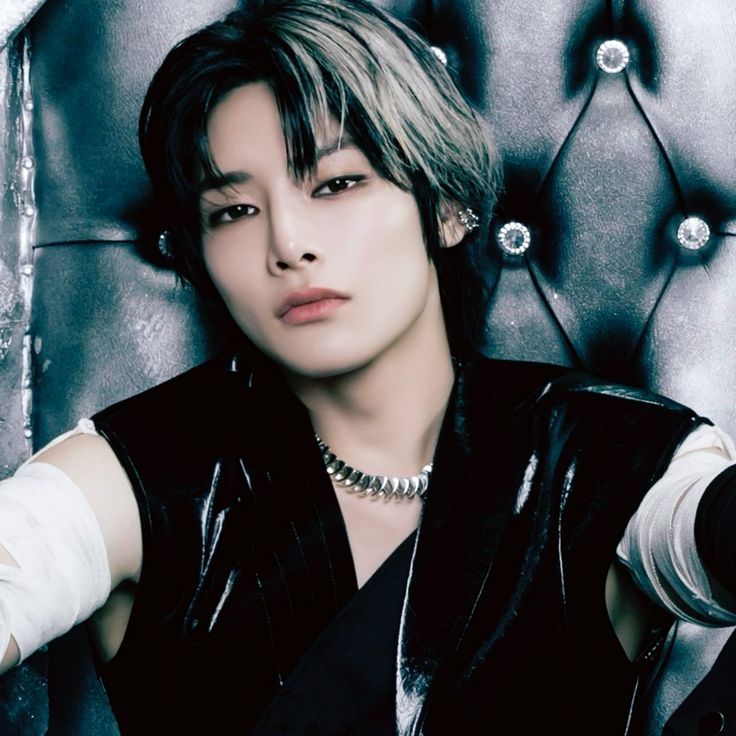

Integrantes de la Banda
SKZ
Stray Kids debutó el 25 de marzo de 2018 bajo JYP Entertainment con el mini álbum "I Am NOT".
El grupo fue formado a través del reality show "Stray Kids" en 2017, donde Bang Chan (líder del grupo)
ayudó a seleccionar a los miembros. Desde el inicio, JYP quería evaluar su talento, trabajo en equipo y
capacidad de crear música.
Bangchan

Bang Chan (nacido el 3 de octubre de 1997 en Seúl, Corea del Sur) es el líder, productor, compositor y vocalista principal de Stray Kids.
Lee Know

Lee Know (nacido el 25 de octubre de 1998 en Incheon, Corea del Sur) es el bailarín principal y vocalista.
Changbin

Changbin (nacido el 11 de agosto de 1999 en Incheon, Corea del Sur) es el rapero principal de Stray Kids.
Hyunjin

Hyunjin (nacido el 20 de febrero de 2000 en Incheon, Corea del Sur) es el bailarín principal y rapero.
Seungmin

Seungmin (nacido el 22 de septiembre de 2000 en Incheon, Corea del Sur) es el vocalista principal.
Felix
.jpg)
Felix (nacido el 15 de septiembre de 2000 en Sídney, Australia) es el rapero secundario y bailarín.
Jisung
.jpg)
Han (nacido el 14 de septiembre de 2000 en Incheon, Corea del Sur) es el rapero, vocalista y productor.
I.N
I.N (nacido el 8 de febrero de 2001 en Incheon, Corea del Sur) es el vocalista y el maknae (el más joven) del grupo.